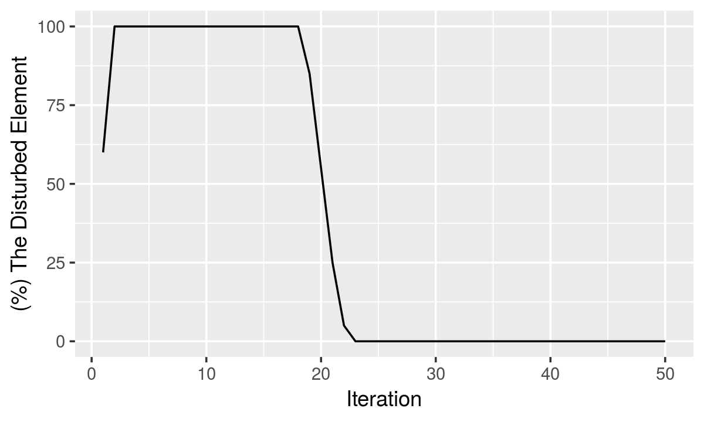

An Offer: How to Find the Appropriate Iteration for Simulation
Selcen Ari
2019-04-12
Source:vignettes/convenient_iteration.Rmd
convenient_iteration.RmdceRNAnetsim
#install.packages("devtools")
#devtools::install_github("selcenari/ceRNAnetsim")
library(ceRNAnetsim)What is the problem or point?
In the regulationSimulatoR package, regulations of miRNA:target pairs are observed via direct or indirect interactions of elements in network. In this approach, change in expression level of single gene or miRNA can affect the whole network like water wave. So, when the change is applied the system, it affects to primary neighborhood firstly, and then the secondary.
In the simple interaction network like minsamp, the water wave-like behavior could be understood, because the neighborhoods of the primary linked elements of trigger element are not interacted to each other. The non-complex interaction can be facilitated to provide the steady-state, after the network is disturbed.
data("minsamp")
minsamp%>%
priming_graph(competing_count = Competing_expression, miRNA_count = miRNA_expression)%>%
update_nodes(once=TRUE)%>%
update_how("Gene4",2)%>%
update_nodes()%>%
simulate_vis(title = "Minsamp: Common element as trigger", 15)
#> # A tbl_graph: 8 nodes and 7 edges
#> #
#> # A rooted tree
#> #
#> # Node Data: 8 x 7 (active)
#> name type node_id initial_count count_pre count_current
#> <chr> <chr> <int> <dbl> <dbl> <dbl>
#> 1 Gene1 Comp~ 1 10000 10061. 10061.
#> 2 Gene2 Comp~ 2 10000 10061. 10061.
#> 3 Gene3 Comp~ 3 5000 5030. 5030.
#> 4 Gene4 Comp~ 4 10000 19528. 19528.
#> 5 Gene5 Comp~ 5 5000 5107. 5107.
#> 6 Gene6 Comp~ 6 10000 10214. 10214.
#> # ... with 2 more rows, and 1 more variable: changes_variable <chr>
#> #
#> # Edge Data: 7 x 20
#> from to Competing_name miRNA_name Competing_expre~ miRNA_expression
#> <int> <int> <chr> <chr> <dbl> <dbl>
#> 1 1 7 Gene1 Mir1 10000 1000
#> 2 2 7 Gene2 Mir1 10000 1000
#> 3 3 7 Gene3 Mir1 5000 1000
#> # ... with 4 more rows, and 14 more variables: dummy <dbl>,
#> # afff_factor <dbl>, degg_factor <dbl>, comp_count_list <list>,
#> # comp_count_pre <dbl>, comp_count_current <dbl>,
#> # mirna_count_list <list>, mirna_count_pre <dbl>,
#> # mirna_count_current <dbl>, mirna_count_per_dep <dbl>,
#> # effect_current <dbl>, effect_pre <dbl>, effect_list <list>,
#> # mirna_count_per_comp <dbl>
Minsamp common target perturbation
For example, in minsamp dataset, the steady-state is occured at iteration-14, as seen above. However, when interactions are more complex, the number of iterations required to maintain steady-state may increase. While the iteration-14 is sufficient for minsamp dataset, the steady-state could not be ensured at iteration-15 for midsamp, as seen following.
data("midsamp")
midsamp
#> Genes miRNAs Gene_expression miRNA_expression seeds targeting_region
#> 1 Gene1 Mir1 10000 1000 0.43 0.30
#> 2 Gene2 Mir1 10000 1000 0.43 0.01
#> 3 Gene3 Mir1 5000 1000 0.32 0.40
#> 4 Gene4 Mir1 10000 1000 0.23 0.50
#> 5 Gene4 Mir2 10000 2000 0.35 0.90
#> 6 Gene5 Mir2 5000 2000 0.05 0.40
#> 7 Gene6 Mir2 10000 2000 0.01 0.80
#> 8 Gene4 Mir3 10000 3000 0.43 0.40
#> 9 Gene6 Mir3 10000 3000 0.35 0.90
#> 10 Gene7 Mir3 7000 3000 0.23 0.30
#> 11 Gene8 Mir3 3000 3000 0.01 0.20
#> 12 Gene6 Mir4 10000 5000 0.05 0.40
#> 13 Gene9 Mir4 6000 5000 0.32 0.80
#> 14 Gene10 Mir4 2000 5000 0.43 0.20
#> 15 Gene11 Mir4 8000 5000 0.35 0.90
#> 16 Gene12 Mir4 1500 5000 0.43 0.40
#> 17 Gene13 Mir4 500 5000 0.23 0.90
#> 18 Gene14 Mir4 7000 5000 0.43 0.80
#> 19 Gene14 Mir3 7000 3000 0.43 0.90
#> 20 Gene15 Mir3 3000 3000 0.35 0.20
#> 21 Gene16 Mir3 2000 3000 0.01 0.80
#> 22 Gene17 Mir3 6000 3000 0.23 0.40
#> 23 Gene17 Mir2 6000 2000 0.35 0.90
#> 24 Gene18 Mir2 1000 2000 0.01 0.01
#> 25 Gene19 Mir2 6500 2000 0.43 0.90
#> 26 Gene20 Mir2 4800 2000 0.35 0.80
#> Energy
#> 1 -20
#> 2 -15
#> 3 -14
#> 4 -10
#> 5 -12
#> 6 -11
#> 7 -25
#> 8 -6
#> 9 -15
#> 10 -20
#> 11 -30
#> 12 -12
#> 13 -18
#> 14 -23
#> 15 -25
#> 16 -30
#> 17 -17
#> 18 -15
#> 19 -25
#> 20 -12
#> 21 -18
#> 22 -22
#> 23 -7
#> 24 -30
#> 25 -32
#> 26 -18
midsamp%>%
priming_graph(Gene_expression, miRNA_expression)%>%
update_nodes(once = TRUE)%>%
update_how("Gene17",2)%>%
update_nodes()%>%
simulate_vis(title = "Minsamp: Common element as trigger", 15)
#> # A tbl_graph: 24 nodes and 26 edges
#> #
#> # A directed acyclic simple graph with 1 component
#> #
#> # Node Data: 24 x 7 (active)
#> name type node_id initial_count count_pre count_current
#> <chr> <chr> <int> <dbl> <dbl> <dbl>
#> 1 Gene1 Comp~ 1 10000 10001. 10001.
#> 2 Gene2 Comp~ 2 10000 10001. 10001.
#> 3 Gene3 Comp~ 3 5000 5000. 5000.
#> 4 Gene4 Comp~ 4 10000 10110. 10110.
#> 5 Gene5 Comp~ 5 5000 5026. 5026.
#> 6 Gene6 Comp~ 6 10000 10105. 10105.
#> # ... with 18 more rows, and 1 more variable: changes_variable <chr>
#> #
#> # Edge Data: 26 x 20
#> from to Competing_name miRNA_name Gene_expression miRNA_expression
#> <int> <int> <chr> <chr> <dbl> <dbl>
#> 1 1 21 Gene1 Mir1 10000 1000
#> 2 2 21 Gene2 Mir1 10000 1000
#> 3 3 21 Gene3 Mir1 5000 1000
#> # ... with 23 more rows, and 14 more variables: dummy <dbl>,
#> # afff_factor <dbl>, degg_factor <dbl>, comp_count_list <list>,
#> # comp_count_pre <dbl>, comp_count_current <dbl>,
#> # mirna_count_list <list>, mirna_count_pre <dbl>,
#> # mirna_count_current <dbl>, mirna_count_per_dep <dbl>,
#> # effect_current <dbl>, effect_pre <dbl>, effect_list <list>,
#> # mirna_count_per_comp <dbl>
Midsamp Gene17 perturbation with 15 iteration
For these reasons, we developed an approach to find optimal iteration of the given network. find_iteration() function analyses the dataset for given iteration number (.iter argument) and offers the iteration that has maximum affected nodes’ count. The other argument is limit that is the minimum amount of change of any node. The limit argument takes into account while the amount of affected node is calculated. Note that a slightly difference on the amount of the any elements on the network can be cause the excessive results.
find_iteration(midsamp, Gene_expression, miRNA_expression, node_name = "Gene2", .iter= 50, how = 2, limit=0)
#> [1] 3When iteration_graph() function are used with find_iteration(), the disturbed elements’ count (%) with iteration number can also be viewed in a plot. Optionally, the iteration number (cycle) that is used in simulate() function can be selected with help of obtained graph.
iteration_graph(midsamp, competing_count = Gene_expression, miRNA_count = miRNA_expression, node_name = "Gene17", .iter= 50, how = 2, limit=0 )
Let’s try offer of iteration_graph for Gene17.
As shown the plot in the above, gaining the steady-state is after the iteration-22. If we try to simulate the network with iteration-25, the results are as following:
midsamp%>%
priming_graph(Gene_expression, miRNA_expression)%>%
update_nodes(once = TRUE)%>%
update_how("Gene17",2)%>%
update_nodes()%>%
simulate_vis(title = "Minsamp: Common element as trigger", 25)
#> # A tbl_graph: 24 nodes and 26 edges
#> #
#> # A directed acyclic simple graph with 1 component
#> #
#> # Node Data: 24 x 7 (active)
#> name type node_id initial_count count_pre count_current
#> <chr> <chr> <int> <dbl> <dbl> <dbl>
#> 1 Gene1 Comp~ 1 10000 10001. 10001.
#> 2 Gene2 Comp~ 2 10000 10001. 10001.
#> 3 Gene3 Comp~ 3 5000 5000. 5000.
#> 4 Gene4 Comp~ 4 10000 10110. 10110.
#> 5 Gene5 Comp~ 5 5000 5026. 5026.
#> 6 Gene6 Comp~ 6 10000 10105. 10105.
#> # ... with 18 more rows, and 1 more variable: changes_variable <chr>
#> #
#> # Edge Data: 26 x 20
#> from to Competing_name miRNA_name Gene_expression miRNA_expression
#> <int> <int> <chr> <chr> <dbl> <dbl>
#> 1 1 21 Gene1 Mir1 10000 1000
#> 2 2 21 Gene2 Mir1 10000 1000
#> 3 3 21 Gene3 Mir1 5000 1000
#> # ... with 23 more rows, and 14 more variables: dummy <dbl>,
#> # afff_factor <dbl>, degg_factor <dbl>, comp_count_list <list>,
#> # comp_count_pre <dbl>, comp_count_current <dbl>,
#> # mirna_count_list <list>, mirna_count_pre <dbl>,
#> # mirna_count_current <dbl>, mirna_count_per_dep <dbl>,
#> # effect_current <dbl>, effect_pre <dbl>, effect_list <list>,
#> # mirna_count_per_comp <dbl>
Midsamp Gene17 perturbation with 25 iteration
The workflow that is aforementioned in this vignette should be thought as suggestion. Because the cycle is a critical argument that is used with simulate() function and affects all results of analysis. In light of this vignette and functions, the approach can be developed according to persent dataset.